Установить Terraria
Откройте страницу игры в Steam, приобретите Terraria и дождитесь завершения установки.
Открыть Terraria в Steam
Установите официальную версию Terraria, затем подключитесь к русскоязычному серверу TerraZ. Без лаунчеров с тремя рекламными установщиками и прочих достижений человеческой цивилизации.
Для запуска требуется официальный экземпляр Terraria. Раздел файлов TerraZ предназначен для дополнительных материалов и компонентов проекта.
Сначала сама Terraria, затем подключение к серверу. Неожиданно линейная схема, почти инженерная.
Откройте страницу игры в Steam, приобретите Terraria и дождитесь завершения установки.
Открыть Terraria в SteamЗапустите сетевую игру, выберите подключение по IP и укажите адрес сервера.
Посмотреть инструкциюДополнительные материалы TerraZ размещаются отдельно, чтобы основной сайт не превращался в склад архивов.
Перейти на d.terraz.ruУстановите клиент Steam или войдите в уже существующую учётную запись.
Откройте страницу игры, приобретите её и нажмите кнопку установки.
Steam автоматически скачает актуальные файлы и установит необходимые компоненты.
После первого запуска создайте персонажа и переходите к подключению к TerraZ.
В главном меню Terraria выберите «Сетевая игра», затем «По IP». Выберите персонажа и введите адрес сервера.
Откройте мультиплеер в главном меню Terraria.
Выберите персонажа и режим подключения по адресу.
Укажите s.terraz.ru и порт 7777.
Официальная версия для ПК доступна в Steam. Магазин устанавливает актуальную сборку и автоматически загружает обновления.
Да. Запустите Terraria из Steam и подключитесь к адресу s.terraz.ru через порт 7777.
Для обычного подключения к серверу отдельный лаунчер не требуется. Достаточно установленной Terraria и адреса сервера.
На отдельном техническом домене размещаются дополнительные файлы и материалы проекта TerraZ.